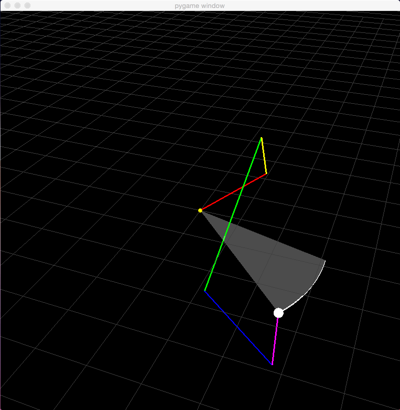
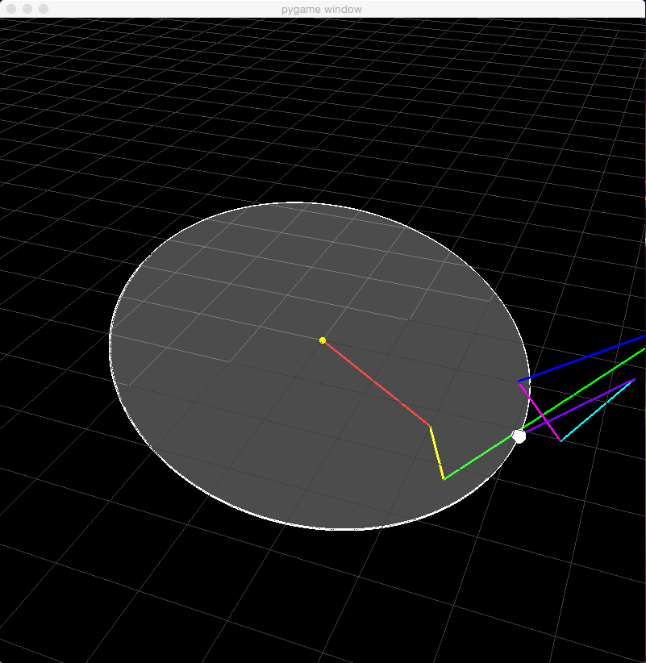
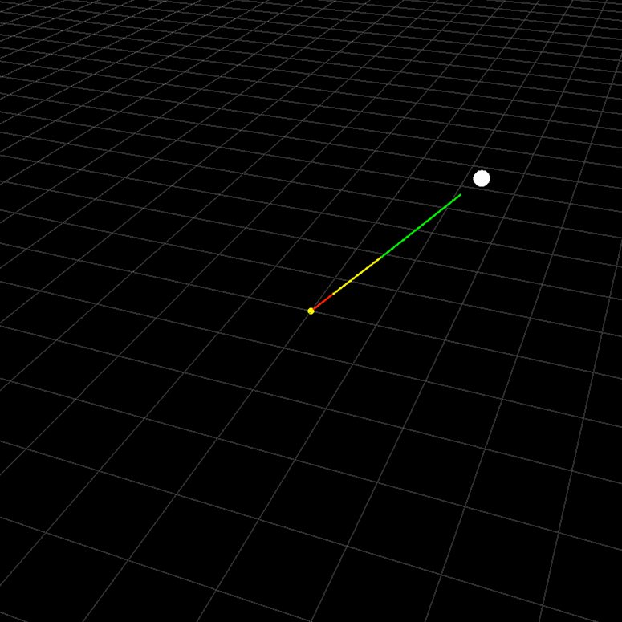

Assignment 4
This assignment was done in collaboration with Casey Currey-Wilson.README, kinematic.py
This assignment implements an inverse kinematics solver and uses it to animate an arm tracking a moving target in 3D. The animations below demonstrate five-segment and seven-segment arms tracking a goal point that moves around a circle in 3D space, which becomes semi-transparent to indicate its intersection with a grid along the X-Z plane.
| Animation 1 (5 segments): python kinematic.py 1 2 0 2 0.8 4 2.3 1.7 -m |
|  |
| Animation 2 (7 segments): python kinematic.py 1 2 0 2 0.8 4 2.3 1 1.3 1.7 -m |
|  |
| Animation 3 (7 segments, larger circle, different camera perspective): python kinematic.py 1 2 0 2 0.8 4 2.3 1 1.3 1.7 -m |
 |
The solver is also robust to out-of-reach targets, pointing as close as possible to a goal point it cannot reach, as demonstrated by the animation below.
| Animation 4 (Out-Of-Reach target): python kinematic.py 0 0.3 4 0.4 0.4 0.6 0.8 |
|  |
Sources/References Used
CS184 Lecture Slides from Professor O'BrienPeter Shirley and Steve Marschner's Fundamentals of Computer Graphics
NumPy - Used NumPy arrays and etc.
PyOpenGL
Pygame
Parametric equation of a circle
Inverse Kinematics in Python
Jacobin in NumPy